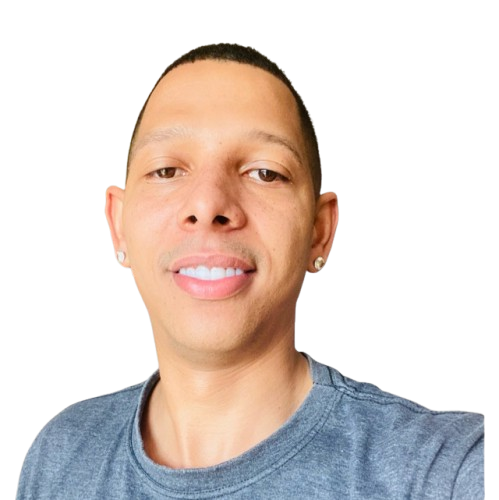

Olá,
Gostaria de me apresentar
Meu nome é Rafael dos Reis Cardoso, sou residente em São Paulo/SP e atualmente estou em transição de carreira para a área de Programação, com foco no desenvolvimento Front-End. Estou cursando Análise e Desenvolvimento de Sistemas na Uninove e possuo uma sólida experiência como Desenhista Projetista, tendo contribuído de forma significativa em projetos que geraram melhorias para os clientes atendidos.Minha trajetória profissional inclui a elaboração e atualização de desenhos técnicos, planejamento de produção, controle de qualidade e suporte administrativo. Atualmente, dedico-me a projetos pessoais na área de tecnologia, com o objetivo de aprimorar habilidades como Python, SQL, JavaScript e ferramentas de desenvolvimento como WordPress e AutoCAD. Busco constantemente novas oportunidades para aplicar e expandir meus conhecimentos em programação, enquanto combino minha experiência anterior com as competências adquiridas na área de tecnologia. Sou uma pessoa comprometida, focada em resultados e apaixonada por aprendizado contínuo.